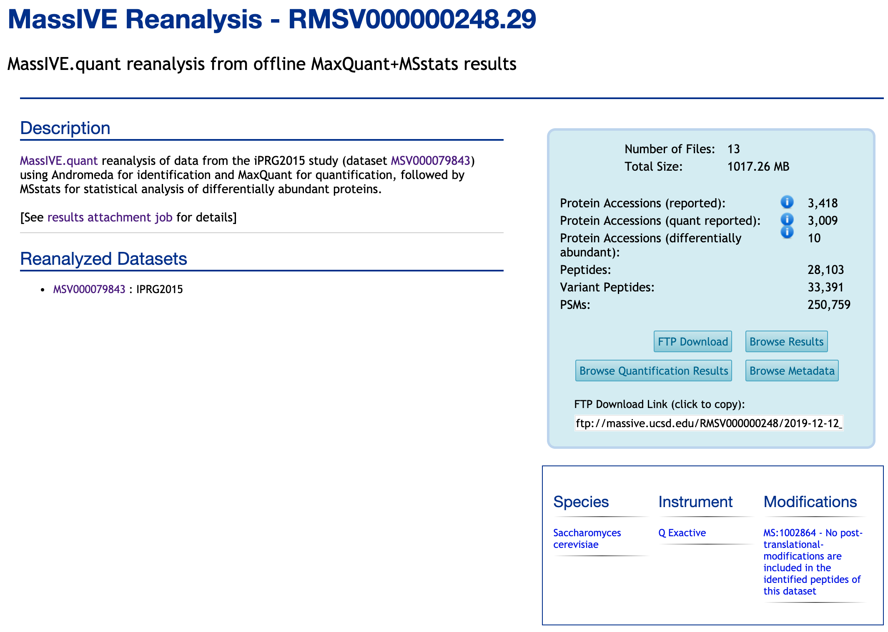

Each individual reanalysis has its own page, as well (accessible from either the dataset or the container):
_todo : 1) new capture for whole page 
title, description.
_todo : 2) new capture for summary table experimental design part : Condition, Bioreplicate, TechReplicate part
Condition : Number of distinct conditions analyzed in this reanalysis. Distinct condition labels are counted across all files submitted in the “Metadata” category having a "Condition" column in this reanalysis.
Biological Replicates: Number of distinct biological replicates in this reanalysis. Distinct replicate labels are counted across all files submitted in the “Metadata” category having a "BioReplicate" or "Replicate" column in this reanalysis.
Technical Replicates: Number of distinct technical replicates in this reanalysis. The technical replicate count is defined as the maximum number of times any one distinct combination of condition and biological replicate was analyzed in files submitted in the “Metadata” category. In the case of fractionated experiments, only the first fraction is considered.
Quantification Result part :
Differential proteins: Number of distinct proteins found to be differentially abundant in at least one comparison in this reanalysis. A protein is differentially abundant if its change in abundance across conditions is found to be statistically significant with an adjusted p-value <= 0.05 and lists no issues associated with statistical tests for differential abundance. Distinct protein accessions are counted across all files submitted in the “Statistical Analysis of Quantified Analytes” category having a "Protein" column in this reanalysis.
Quantified proteins : Number of distinct proteins quantified in this reanalysis. Distinct protein accessions are counted across all files submitted in the “Statistical Analysis of Quantified Analytes” category having a "Protein" column in this reanalysis.